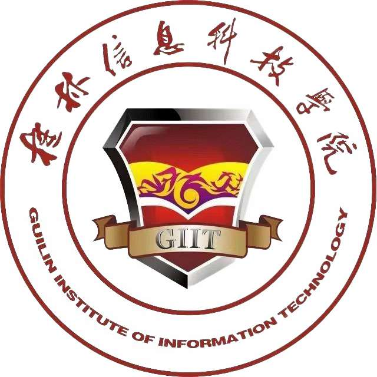
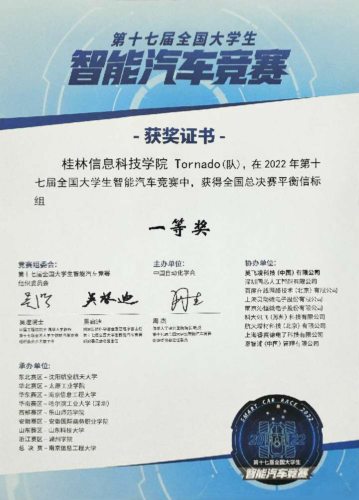
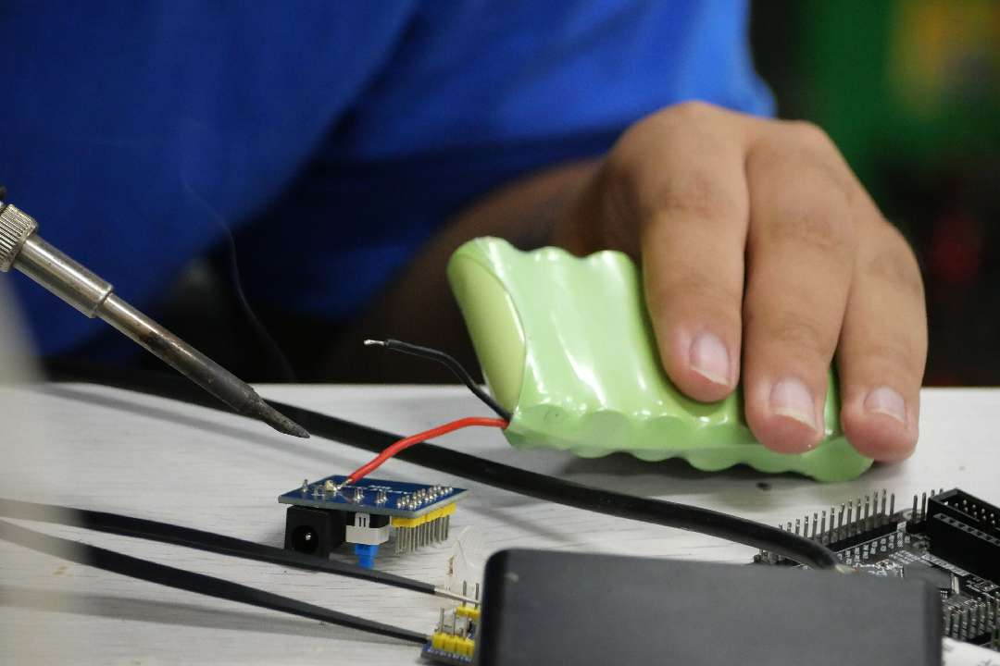

自强不息
志在千里
通信基地发展历程
-
2008
软件产业基地成立
成立于2023年，第一批加入双创学院的基地，主要研究软件产教融合方面。
-
2011
发展迅猛
作为当时全国五所独立院校之一，荣获全国大学生电子设计竞赛全国一等奖，也是青岛市独立学院首次获得该比赛的国一。
-
2021
重铸荣光
伍冠宇、雷寰宇、梁梅三人取得电赛国二的好成绩，标志着通信基地转向嵌入式开发。
-
2022
技术创新
郑帅、梁梅、梁杰锋三人荣获全国大学生智能汽车竞赛信标组全国一等奖，参加该赛事第二年就取得好成绩
-
2023
稳定发挥
梁杰锋、张嘉铭、张业浩三人荣获电赛国二，通信基地连续三年取得重点比赛的国家级奖项
-
now
未来待续...
敬请期待
基地简介
通信基地全称“大学生通信技术创新实践基地”，是一个面向全校高升本招生的创新基地，其主要功能定位为：招收学有余力的学生并开展信息技术技能的培训、科技创新创业、组织和指导我校学生参加以通信电子信息类为主的重大学科竞赛，组织相关科技创新实践活动，提高学生的创新精神和实践能力，为培养创新型人才提供支持和保障。
竞赛成果
基地积极组织学生参加全国大学生工程实践与创新能力大赛、全国大学生电子设计竞赛、全国大学生智能汽车竞赛等一系列通信电子类赛事。连续三年稳定发挥，分别在2021年荣获电赛国二、2022年智能车国一、2023年电赛国二。
技术培训
通信基地位于E223，下设的智能车训练馆位于E216，加入的学生主要研究嵌入式方向。基地在每年九月起定期举办通信技术相关的培训课程，包括PCB绘制与焊接、C语言基础、51单片机实用教程等，帮助新生提高专业技能和创新能力。对已加入的同学进行期末考核，考核从你大一到大三一直进行，以确保能够掌握相关的技能和知识。欢迎在通信、电子、计算机上有一定想法或基础能力的你加入我们，今后的基地培训和国家级竞赛是提升自我能力的优选！
基地优势
在信科你想毕业是需要两个创新创业学分的，学分够多还能抵消掉一些非必修课，减少学费的同时还能投入更多的时间用来学习。2022年从基地毕业到深圳工作的伍学长月薪15k、黄学长12k；2023年从基地毕业到深圳工作的刘学长月薪15k、华学长14k。比不搞比赛和项目的同学薪资高很多。在今后就业形势越来越严峻，或许需要付出更多才能找到满意的工作了，对你来说好不容易结束掉高考，还不算晚，现在请为你的大学四年投资吧！
加入我们
常规：等新生的你们军训完我们会发布宣讲会信息，如果对我们感兴趣加群填写电子报名表，并在一星期后进行简单的面试。之后我们会有培训+考核，在过程中坚持下来的人就能成为我们的一员。
直达：什么！你居然是有着C语言基础、绘制PCB的经验、懂得51单片机或32单片机、或者搞过如无人机、航模、机器人等科技爱好的大佬！那还等什么速速私聊群主一起吹水吧。